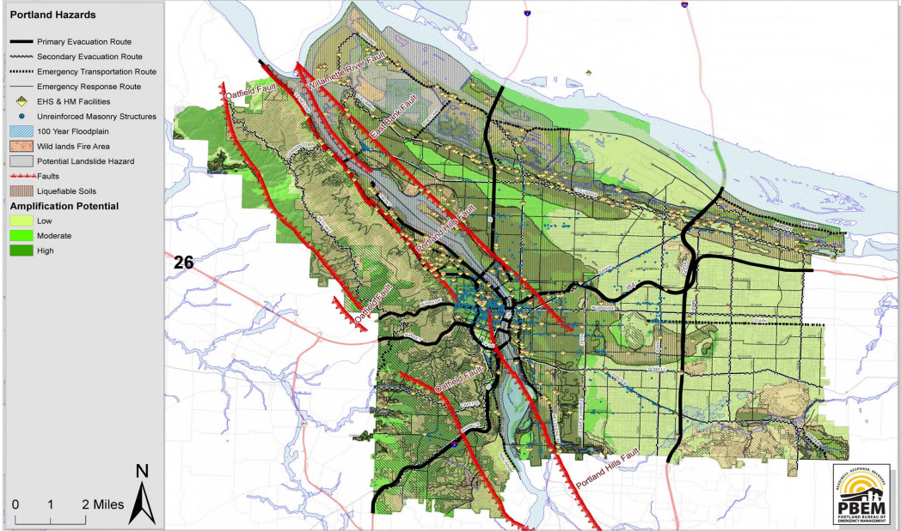

Portland Evacuation Routes

City of Portland Earthquake Response Appendix
What to Do During an Earthquake?
- Check yourself.
- Stay calm and stay in your location.
- If you are indoors: stand against a wall near the center of the building, stand in a doorway, crawl under furniture and stay away from windoors and outside doors.
- If you are outdoors: stay in the open and away from power lines. Stay away from buildings or anything that might fall.
- If you are in a car stay in the car until the earthquake stops.
- Don't try to use matches or light a fire.
- Don't try to use an elevator.
What to Do After an Earthquake?
- Check yourself and those around you. Perform first-aid if needed.
- Check water, gas and electric lines for damage.
- If damaged, turn of valves. If you smell gas, open windows and doors and leave immediately.
- Turn on the radio and don't use your phone unless you have to.
- Stay away from beaches. Tsunamis and seiches sometimes hit after the ground has stopped shaking.
- If you're at school or work, follow the emergency plan or the instructions of the person in charge.
- Expect aftershocks.